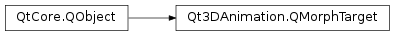

Qt3DAnimation.QMorphTarget¶
Synopsis¶
Functions¶
- def
addAttribute(attribute) - def
attributeList() - def
attributeNames() - def
removeAttribute(attribute) - def
setAttributes(attributes)
Signals¶
- def
attributeNamesChanged(attributeNames)
Static functions¶
- def
fromGeometry(geometry, attributes)
Detailed Description¶
A class providing morph targets to blend-shape animation
A
Qt3DAnimation.QMorphTargetclass is a convenience class, which provides a list ofQAttributes, which theQMorphingAnimationuses to animate geometry. AQMorphTargetcan also be created based on existingQt3DRender.QGeometry.
-
class
PySide2.Qt3DAnimation.Qt3DAnimation.QMorphTarget([parent=nullptr])¶ Parameters: parent – PySide2.QtCore.QObjectConstructs a
QMorphTargetwith givenparent.
-
PySide2.Qt3DAnimation.Qt3DAnimation.QMorphTarget.addAttribute(attribute)¶ Parameters: attribute – PySide2.Qt3DRender.Qt3DRender::QAttributeAdds an
attributethe morph target. An attribute with the same name must not have been added previously to the morph target.
-
PySide2.Qt3DAnimation.Qt3DAnimation.QMorphTarget.attributeList()¶ Return type: Returns a list of attributes contained in the morph target.
-
PySide2.Qt3DAnimation.Qt3DAnimation.QMorphTarget.attributeNames()¶ Return type: list of strings
-
PySide2.Qt3DAnimation.Qt3DAnimation.QMorphTarget.attributeNamesChanged(attributeNames)¶ Parameters: attributeNames – list of strings
-
static
PySide2.Qt3DAnimation.Qt3DAnimation.QMorphTarget.fromGeometry(geometry, attributes)¶ Parameters: - geometry –
PySide2.Qt3DRender.Qt3DRender::QGeometry - attributes – list of strings
Return type: PySide2.Qt3DAnimation.Qt3DAnimation::QMorphTargetReturns a morph target based on the
attributesin the givengeometry.- geometry –
-
PySide2.Qt3DAnimation.Qt3DAnimation.QMorphTarget.removeAttribute(attribute)¶ Parameters: attribute – PySide2.Qt3DRender.Qt3DRender::QAttributeRemoves an
attributefrom the morph target.
-
PySide2.Qt3DAnimation.Qt3DAnimation.QMorphTarget.setAttributes(attributes)¶ Parameters: attributes – Sets
attributesto the morph target. Old attributes are cleared.
© 2018 The Qt Company Ltd. Documentation contributions included herein are the copyrights of their respective owners. The documentation provided herein is licensed under the terms of the GNU Free Documentation License version 1.3 as published by the Free Software Foundation. Qt and respective logos are trademarks of The Qt Company Ltd. in Finland and/or other countries worldwide. All other trademarks are property of their respective owners.